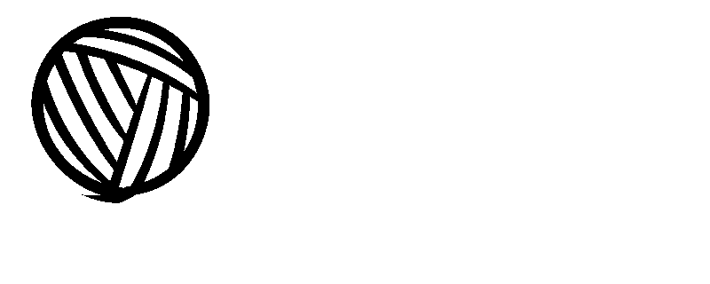

Over Simba
Simba is een lieve leeuw met reusachtige, zachte manen. Met zijn warme kleuren, ronde snoet en lange poten is hij perfect om mee te knuffelen. Durf jij zijn wilde manen te maken?


Maak kennis met Simba: een zachte leeuw met een klein hartje en grote manen. Zijn warme, goudgele lijf en volle bruine krullen maken hem stoer en knuffelig tegelijk.
Simba wordt ongeveer 30 centimeter lang. Zijn poten worden tijdens het haken meteen aan zijn lijf bevestigd. Daardoor hoef je achteraf minder losse onderdelen vast te naaien. De grote lusmanen maken hem helemaal bijzonder!
Simba is een lieve leeuw met reusachtige, zachte manen. Met zijn warme kleuren, ronde snoet en lange poten is hij perfect om mee te knuffelen. Durf jij zijn wilde manen te maken?
Voor het maken van Simba heb je nodig: (Als je hem precies hetzelfde wil maken als het voorbeeld. Wil je dit niet voel je dan vrij om het aan te passen naar jouw wensen).
Voor dit haakproject is het handig als je bekend bent met:
Lees het volledige patroon eerst rustig door voordat je begint. Zo weet je welke onderdelen je gaat maken en wanneer je deze moet vullen. Gebruik een steekmarkeerder om het begin van iedere toer aan te geven. Vooral bij het pluizige garen kunnen de steken moeilijker zichtbaar zijn.
Vul ieder onderdeel stevig, maar niet zo vol dat de steken uit elkaar gaan staan. Besteed extra aandacht aan de hals, zodat het hoofd van Simba goed rechtop blijft staan. Zet alle onderdelen eerst met spelden vast voordat je ze definitief aan elkaar naait.
De plaatsing van de onderdelen bepaalt voor een groot deel de persoonlijkheid van Simba.
Wil je Simba aan een baby, jong kind of je hond geven? Gebruik dan geen veiligheidsogen. Je kunt de ogen in dat geval met zwart garen borduren. Controleer ook of alle onderdelen stevig vastzitten en werk alle losse draden goed weg.